linux用户管理
|
|
Linux用户管理
文件目录管理
|
|
文件和目录的权限
|
|
find命令
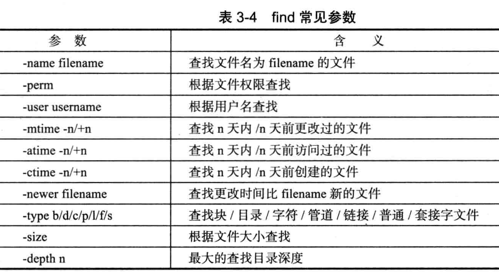
linux文件系统
文件系统
文件系统包括
- 超级块：文件系统的总体信息，是文件系统的核心，有多个超级块，以防止由于磁盘出现坏块导致全部文件系统无法使用
- inode：存储所有与文件有关的元数据，也就是文件所有者，权限等属性数据以及指向的数据块
- 数据块：真实存放文件数据的部分
- 目录块：包括文件名和文件在目录中的位置，并包括文件的inode信息
|
|
将一块磁盘挂载到操作系统的步骤：先对磁盘进行划分，将磁盘格式化，刷进去文件系统，然后将磁盘挂载到操作系统中，然后将挂载操作设置为开机自启动
逻辑卷（Logic Volume Manager）
LVM是介于硬盘裸设备和文件系统的中间层
- 物理卷（Physical Volumn,PV)：物理磁盘分区，比如/dev/sdb1
- 卷组（Volumn Group,VG):PV的集合
- 逻辑卷（Logic Volume,LV):PV中划出来的一块逻辑磁盘
|
|
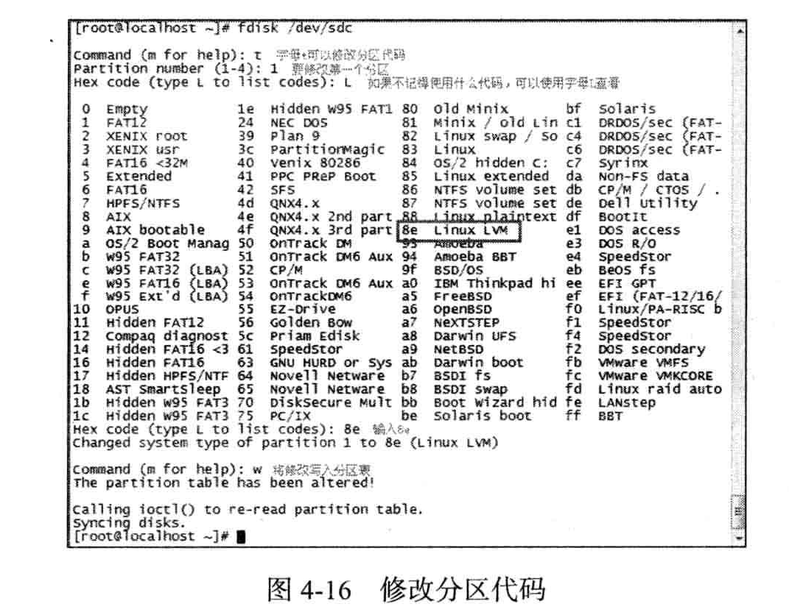
硬链接和软连接
|
|
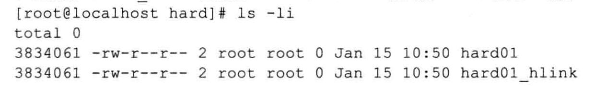
该详细信息中的第三列中的2的意思为源文件的关联个数，也就是该文件所包含的硬链接的个数
硬链接:通过索引节点来链接，一个文件可以有多个文件名，多个文件名指向同一个inode是可以的
软连接：是一个包含了另外一个文件路径名的文件，可以指向任意文件或者目录，可以跨不同的文件系统
字符处理
固定大小的缓存，缓存的大小为4KByte。符号为”|”
|
|
|
|
|
|
|
|
使用uniq一般情况下都是跟sort进行使用，因为uniq只会比较跟相邻位置的字符是否相同
|
|
|
|
|
|
|
|
网络管理
|
|
进程管理
|
|
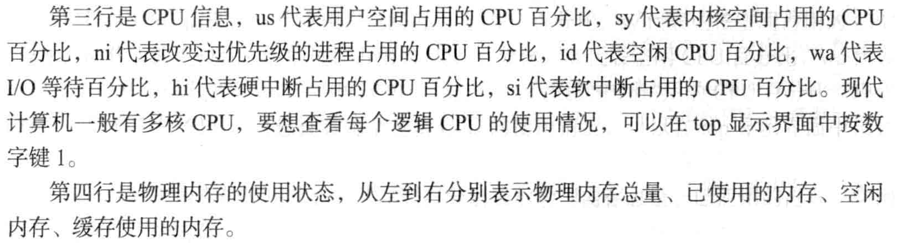
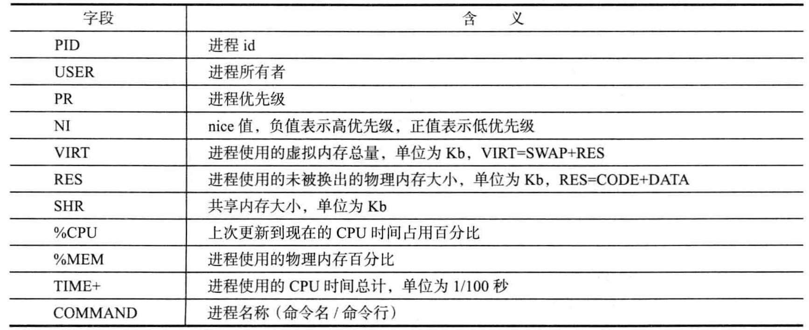
Linux软件安装

|
|
编辑器
| 快捷键 | 作用 |
|---|---|
| Shift+$ | 到当前行的末尾 |
| u | 撤销操作 |
| :n | 跳转到第n行 |
| p | 黏贴 |
| Ctrl+r | 重做操作 |
| yy | 复制当前行 |
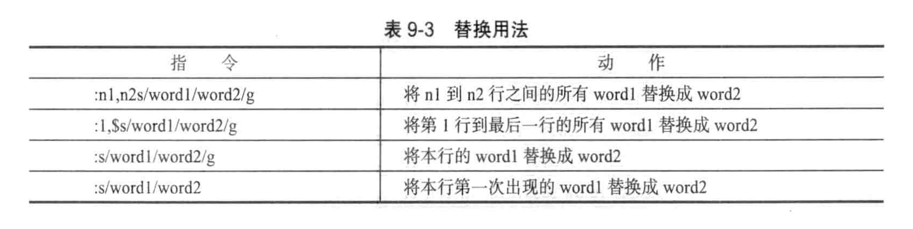
正则表达式
- “.”：除换行符之外的任意一个字符
- *:用来匹配前一个字符0次或者任意多次，.*用来匹配任意长度的不包含换行的字符
- {n,m}:重复匹配前一个字符n-m次
- ^或$:开始和结束的标识
- []:用来匹配方括号内出现的任一个字符
- \：转义字符
- \<和\>:用于界定单词的左边界和右边界，比如\bhelloy用来匹配以hello开头的单词
- \d:用来匹配数字
- \b:匹配单词的边界
- \B:匹配非单词的边界
- \w:匹配数字，字母和下划线，”\W”：\w的取反
- \s:匹配任何空白字符，”\S”：匹配任何非空白字符
通配符：
- ?:用来匹配一个字符
- {}:用来匹配所有括号内包含的以逗号隔开的字符
- ^或者!:用来取反
POSIX字符：
|
|
|
|
sed
sed是对于每行进行处理的
|
|
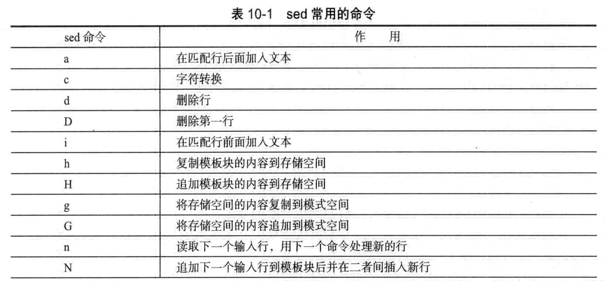
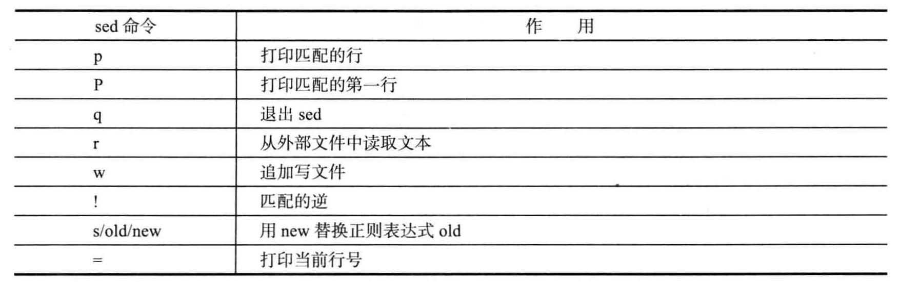
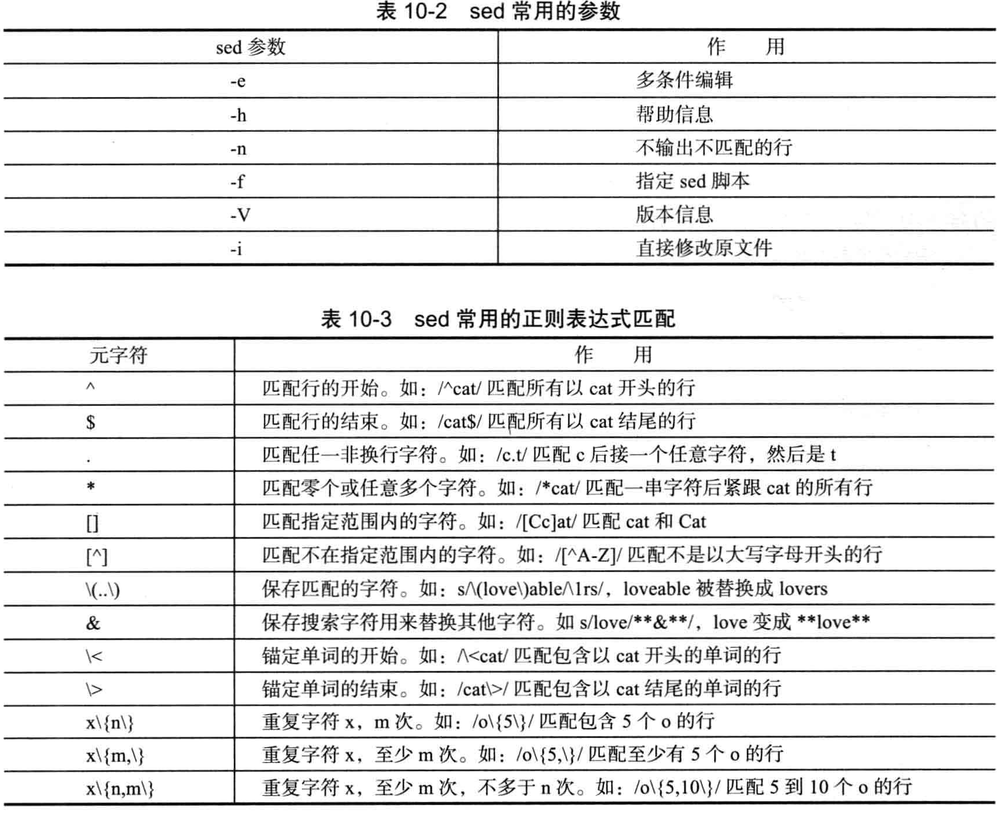
awk
作用：是对每一列进行处理
|
|
shell编程概述
|
|
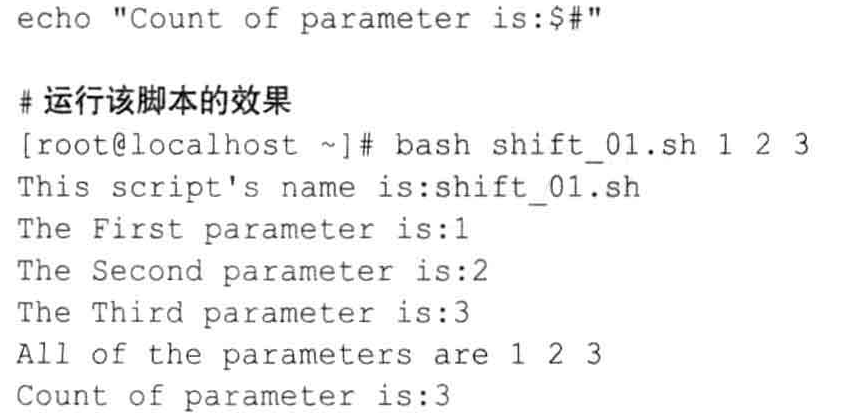
shell基础编程
|
|
变量
|
|
运算符
- 部分引用：双引号，在双引号里面，$，反引号，转义符这3中特殊字符依然会被解析成特殊意义
- 全引用：单引号中的任何字符都是作为普通字符
- 命令替换：将命令的标准输出作为值赋给某个变量。反引号等价于$()
$[]和$(())类似，可用于简单的算术运算。
|
|
特殊字符
- *:任意长度的字符串，不包含点号和斜线号
- ?:匹配单个字符
- []:匹配其中的任意一个字符。*和？在[]中则变成了普通字符，没有通配的功效
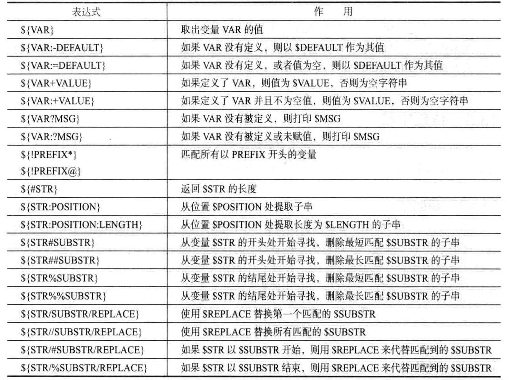

测试和判断
测试
|
|
循环
|
|
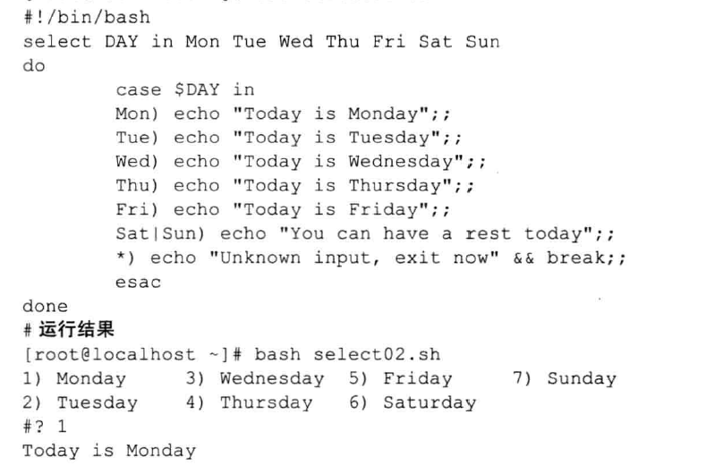
函数
|
|
重定向

|
|
使用exec
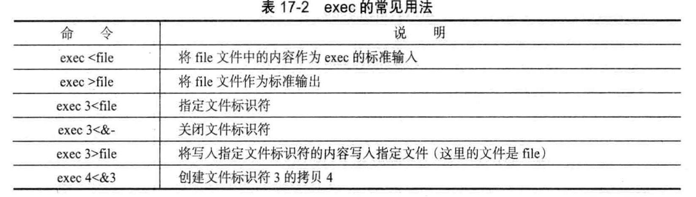
|
|